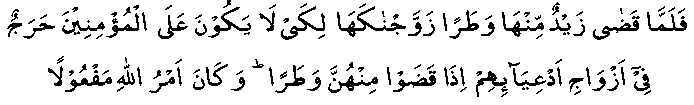

Ummul Mominin Hadhrat Zainab (RA) was a cousin of Nabi (Sallallahu Alayhi Wasallam). She accepted Islam in its early days. Initially, she was married to Hadhrat Zaid (RA), who was a freed slave and the adopted son of Nabi (Sallallahu Alayhi Wasallam). He was therefore known as Hadhrat Zaid bin Muhammad (Sallallahu Alayhi Wasallam). Hadhrat Zaid (RA) could not get on well with Hadhrat Zainab (RA) and at last divorced her. Now, according to the Pre-Islamic customs, an adopted son was treated as a real son, so much so that his widow or divorced wife could not be married to his adopted father. Nabi (Sallallahu Alayhi Wasallam) wanted to break this unfair custom, so he asked Hadhrat Zainab (RA) to marry him. When Hadhrat Zainab (RA) received the offer, she said: "Let me seek advice from my Allah Ta’ala!" She then performed Wudhu and stood up in Salaah. Her action was blessed by Allah Ta’ala and the following verse was revealed to Nabi (Sallallahu Alayhi Wasallam).

“So when Zaid had divorced her, we gave her to you in marriage, so that there may be no sin for believers in marrying the wives of their adopted sons, when they have divorced them. The command of Allah must be fulfilled." (S33 : V37)
When Hadhrat Zainab (RA) was informed of the good news that Allah Ta’ala had given her in Nabi (Sallallahu Alayhi Wasallam) marriage and had revealed a verse to that effect, in happiness, she gave all her jewelry that she was wearing at that time to the person who had informed her. Then she fell down in Sajdah and promised to fast for two months. She was very proud of the fact that, while every other wife of Nabi (Sallallahu Alayhi Wasallam) was given in marriage to him by their relatives, she was given by Allah Ta’ala, as stated in the Qur-aan.
Hadhrat A`ishah (RA) was also proud of being the most beloved wife of Nabi (Sallallahu Alayhi Wasallam) and there was always some rivalry between the two wives. In spite of all this, when Nabi (Sallallahu Alayhi Wasallam) asked Hadhrat Zainab’s (RA) view about Hadhrat A`ishah (RA) in the matter of the slander against Hadhrat A`ishah (RA), she said: "I find everything good in A`ishah (RA)."
Look at her honesty and character. If she wished, she could have harmed the status of her rival and lowered her, in the eyes of their common husband, who loved Hadhrat A`ishah (RA). On the other hand, she praised her in very strong words.
Hadhrat Zainab (RA) was a very pious lady. She fasted very often and would say her Nafl Salaah regularly. She earned by working with her hands, and spent all that she earned in the path of Allah Ta’ala.
At the time of Nabi (Sallallahu Alayhi Wasallam) death, his wives asked him: "Which one of us will join you first?"
He said: "The one with long arms."
They began to measure their arms with a stick. They, however, came to know later that long hands meant generous spending in charity. Hadhrat Zainab (RA) was indeed the first to die after Nabi (Sallallahu Alayhi Wasallam).
Hadhrat Barazah (RA) narrates: "Hadhrat Umar (RA) decided to pay a yearly allowance to the Ummahat-ul-Mominin (wives of Nabi (Sallallahu Alayhi Wasallam) from the Baitul Maal. He sent me with 12 000 dirhams to Hadhrat Zainab (RA) as her share. She thought that the 12 000 was for all of the wives, and said to me, 'Umar (RA) should have asked somebody else to distribute this money.' I said, 'It is the yearly share for you alone.' She asked me to throw it in the corner of a room and cover it with a piece of cloth. Then she mentioned the names of some poor people, widows and her relatives, and asked me to give one handful to each of them. After I had distributed the money according to her wishes, some money was still left under the cloth. I asked her to have something for myself. She said, 'You take the rest.' I counted the money. It was eighty four dirhams. Then she lifted her hands in prayer and said, 'O, Allah! keep this money away from me, for it brings temptation.' She died before the allowance for the next year could be paid to her. When Hadhrat Umar (RA) came to know of what she had done with the money, he sent her another 1000 dirhams for her personal needs, but even those she spent very quickly. During the last portion of her life, the Muslims were winning territory after territory, and wealth was pouring into Madinah Munawwarah, yet she left no money or other wealth after her, except the house where she lived. She was called Ma'wal Masaakeen (shelter of the poor), due to her generous spending in charity."
A woman narrates: "Once Hadhrat Zainab (RA) and I were dyeing our clothes with red dye. Nabi (Sallallahu Alayhi Wasallam) came in, but went out again when he saw us dyeing our clothes. Hadhrat Zainab (RA) felt that Nabi (Sallallahu Alayhi Wasallam) had perhaps not liked our clothes being dyed in that colour. She immediately washed all the dyed clothes till their colour was gone. When Nabi (Sallallahu Alayhi Wasallam) came again and saw what had been done, he entered."
Everybody knows the love women have for money and colours. But look at these ladies, who gave away the money received by them in charity and got rid of any colour which caused Nabi (Sallallahu Alayhi Wasallam) to be unhappy.